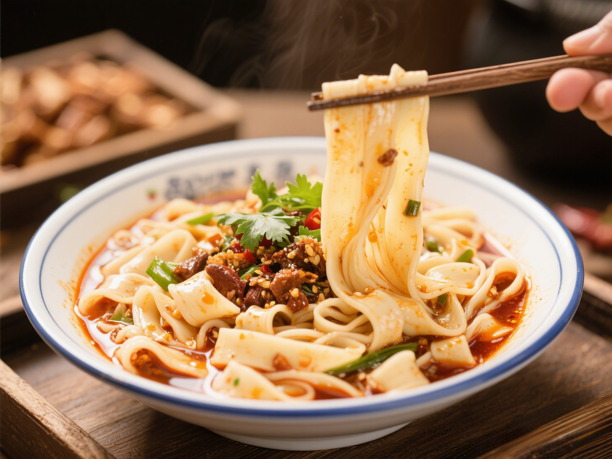
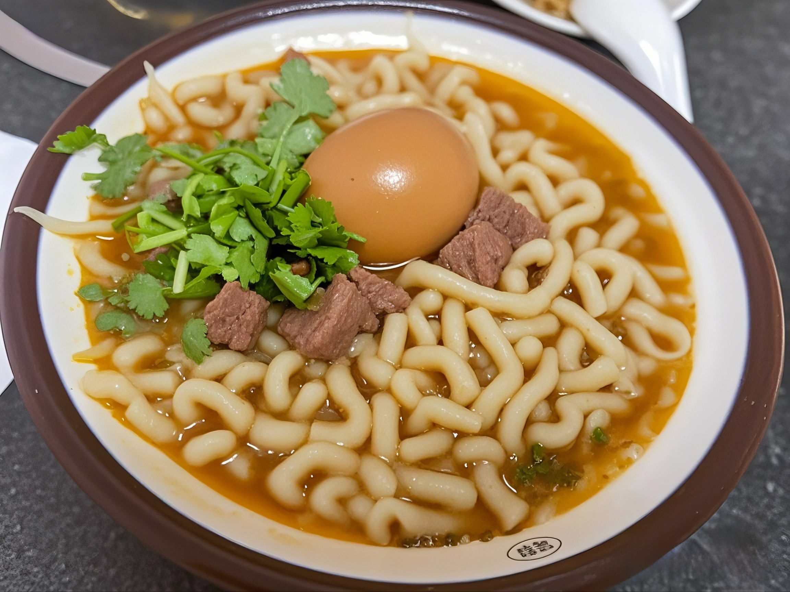
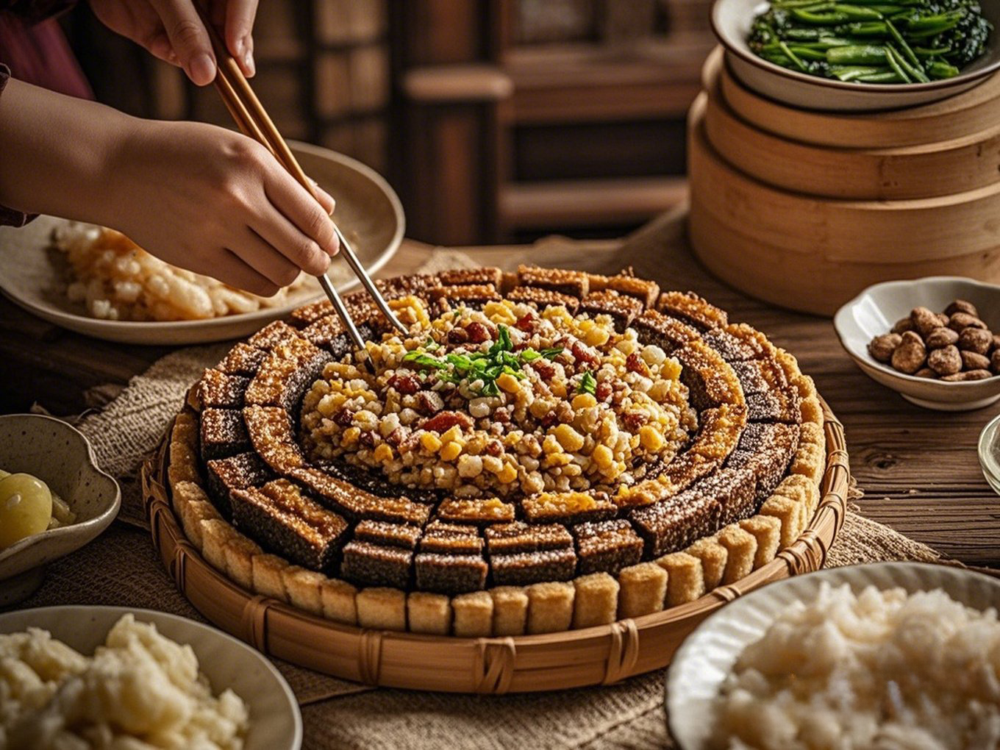
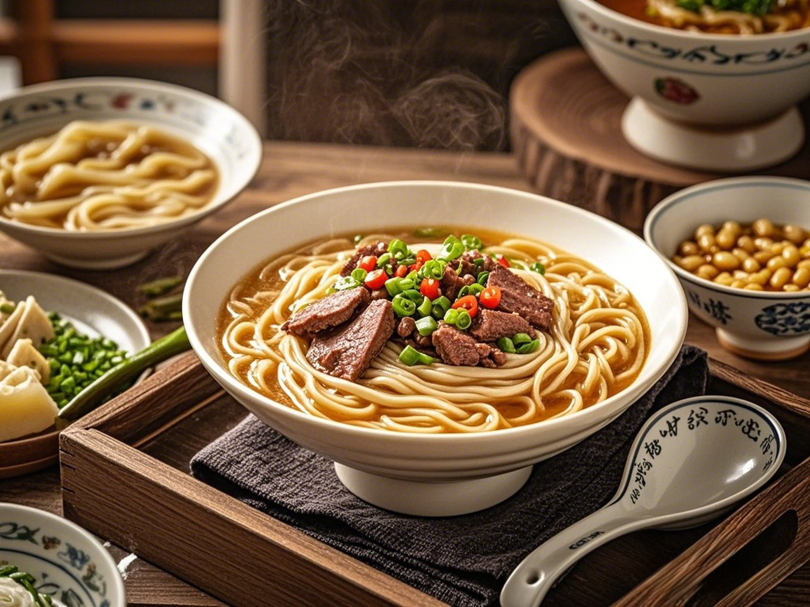

山西大同刀削面是当地最具代表性的面食之一，以独特的制作工艺和筋道口感闻名。厨师用特制弧形刀将面团削成中间厚、边缘薄的三棱形面条，飞入沸水中煮熟后，面条爽滑有嚼劲。经典卤汁以猪肉臊子为主，搭配酱油、醋、花椒等调料。

抿八股是山西大同的特色面食，以莜面或豆面为主料，通过特制工具“抿床”压制成短条状，形似细短的“小蝌蚪”。煮熟后口感滑嫩筋道，常搭配羊肉臊子、酸菜卤或土豆豆腐等浇头，风味朴实浓郁，兼具粗粮营养与地方饮食特色。
莜面栲栳栳是山西大同的传统面食，以莜面为主料制成。将莜面揉成面团后，搓成小卷或筒状，形似蜂窝，蒸熟后口感筋道，带有莜麦特有的清香。常搭配羊肉臊子、酸菜或番茄酱等蘸料食用，风味质朴，是大同粗粮细作的典型代表。

山西大同美食块垒（kuǐ lěi）是一种传统粗粮面食，主要由莜面或玉米面制成。将面团搓成小颗粒状后蒸熟，带有粗粮的天然香气。常见吃法是与土豆、酸菜同炒，或蘸羊肉汤、酸辣汁食用，质朴饱腹，体现了晋北地区“粗粮细作”的饮食特色。

山西大同的压豆面是一道传统面食，以豌豆面或混合豆面（如绿豆、黄豆）为主料，加入少量小麦面增加韧性。面团经过反复揉压后，用饸饹床子（压面工具）压成细长面条，带有豆类的清香。常见的吃法搭配羊肉臊子、酸菜汤或葱花辣油，汤鲜面韧，营养丰富。
西北经典美食，选用羔羊肉清水炖煮，肉质鲜嫩，原汁原味，搭配椒盐食用更佳。手抓羊肉是晋北地区的传统名菜，选用当地优质绵羊，大块羊肉清水炖煮至软烂，仅用盐、葱、姜等简单调味，突出羊肉的原汁原味。其特点是肉质鲜嫩不膻，肥而不腻，蘸着蒜醋汁或椒盐食用，豪迈的吃法尽显塞北风情。这道菜体现了游牧文化与农耕饮食的结合，尤其适合冬季进补，是大同宴客待友的硬核美味。
成都特色小吃，卤制入味，麻辣鲜香，肉质细嫩，是下酒伴茶的绝佳选择。麻辣兔头是一道极具特色的地方小吃，选用新鲜兔头卤制后，再用辣椒、花椒等香料爆炒，味道麻辣鲜香，肉质细嫩入味。其特点是红亮油润、骨酥肉烂，啃食时香辣过瘾，兼具川味的火爆与晋北的粗犷，尤其适合作为下酒菜。这道美食体现了大同人对麻辣口味的独特演绎，如今已成为当地夜宵摊的招牌美味，吸引众多食客慕名品尝。
山西大同过油肉是晋菜经典代表，选用猪里脊或羊腿肉切片，经秘制酱料腌制后旺火快炒，配以黑木耳、蒜苔等辅料，成品色泽金黄、油润透亮。其独特之处在于"过油"工艺——肉片先滑油锁住水分，再爆炒至外酥里嫩，入口鲜香滑嫩略带醋香。这道菜源于明代晋商宴客菜肴，现已成为大同家常菜与宴席必备，搭配米饭或刀削面食用尤佳，完美诠释了晋菜"浓油赤酱、醋香点睛"的风味精髓。
山西大同羊杂割是一道极具地方特色的传统小吃，以羊心、肝、肺、肚等内脏为主料，切丝后与土豆粉条、鲜汤同煮，佐以辣椒油、葱花香菜提味。其汤色红亮，口感醇厚，兼具内脏的鲜嫩与粉条的爽滑，尤其适合寒冷季节食用。这道美食体现了晋北人粗犷的饮食风格，相传源自元代牧民"羊杂碎泡食"的吃法，如今已成为大同早餐文化的代表，搭配黄糕或油饼更显风味。